{kind=link}
{kind=link}
{kind=link}
{kind=link}
{kind=link}

{kind=link}
{kind=link}
Найдено в ЖЖ, там же и рассказ о хозяине дома.
{kind=link}
{kind=link}
{kind=link}
Из коллекции Кирилла Лебедева, который нашёл и сфотографировал все деревянные дома Москвы.
{kind=link}
{kind=link}
С сайта pastvu.com
Страницы авторов "Тёмного леса"
Литературный Кисловодск и окрестности
Пишите нам! temnyjles@narod.ru
Мы знали, что он должен быть где-то тут - между гаражей, автосервисов, госпиталем МВД и Тимирязевским лесом. Пытались найти, несколько раз попадали в тупики, забрались на территорию госпиталя и уже видели дом за забором, хотели даже пролезть между прутьев забора, но потом всё-таки нашли лазейку и легальную тропинку.
Около входа на территорию госпиталя МВД левее входа забор не плотно доходит до стены. Вот в эту щель и нужно просачиваться.
Дом ещё более невероятен для Москвы, чем дача Дикого в Новогирееве. Можно только гадать, почему он сохранился и при постепенном сносе деревни, и при строительстве госпиталя, и потом не сгорел и не развалился.
По недостоверной информации когда-то это был дом личного водителя Ленина. Но это, скорее всего, просто народные попытки как-то обосновать уникальную живучесть дома.
Недавно у дома обвалился балкон и часть стены со стороны леса. Но по всем признакам часть дома по-прежнему обитаема.
Вот некоторые результаты интернет-изысканий об этом доме.
год постройки: 1917 год
процент износа: 67 % , дата последнего обследования - 19.07.1985 г.
класс строения: жилые
назначение: индивидуальное жилое строение
этажность: 1 эт. [??? на вид - явно два этажа]
тип перекрытия: деревянные
материал стен: деревянные
материал кровли: асбофанера-шифер
водопровод: да
канализация: да
отопление: да
общая площадь: 137 м2
жилая площадь: 94 м2
количество квартир: 2
памятник архитектуры: нет
"Вот что ещё знаю по этому поводу: дом принадлежит реальному человеку (один из моих соседей по гаражу), при этом он там не проживает - имеет обычную квартиру в нашем районе неподалёку. Но! Документы на старый деревянный дом (дом достался ему по прямому наследству) оформлены были в своё время как-то уж очень правильно, что не позволило государству изъять дом у этого мужика, хотя дом этот уже в начале 80-х очень сильно мешал развернувшемуся на этом месте строительству весьма огромного и пафосного объекта - вышеупомянутого комплекса зданий госпиталя ГУВД. Самое странное, что даже в 90-х, когда всеми делами рулили бандиты, дом у хозяина отжать не удалось - хотя, помницца, какие-то тёрки на этот счёт тогда были, и мы, чесснагаваря, всёж-даки думали, что хозяина деревянного дома (и, самое главное - неплохого куска земли) однажды обнаружат в соседнем лесопарке с пробитой башкой. Но... Время шло, а ничего не менялось - дом стоял и всё. Вот и сегодня дом стоит так-же на том-же месте, как и почти сто лет назад.
Да, на счёт того, что дом жилой. В своё время (уже в 90-е гг.) хозяин дома пустил туда пожить некую семью, оказавшуюся в трудной ситуации - у них какие-то проблемы с жильём, точно уже и не помню. Видимо, ещё и с расчётом того, что в результате получицца, что за домом будет хоть какой-то надзор и пригляд со стороны живых людей. В общем, так до сих пор они живут там - в старом и уже ветхом деревенском доме - последнем доме исчезнувшей с карты Москвы деревни Ипатовка".
Старых фотографий этого дома найти не удалось, только сравнительно недавние. На них ещё не развалившаяся восточная стена с балконом.
Нашлись фотографии 50-60-х годов, на которых есть другие дома Ипатовки и Ипатовский пруд (засыпан в 64-67). На месте пруда никаких домов не построили, только гаражи и полулегальные автосервисы. Так что, похоже, этот дом раньше был между прудом и лесом.
| 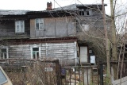 | Дом получается даже не двух-, а трёхэтажный - есть чердачок с выбитыми окошками. |
| Фото Антона Евсеева. | |
| 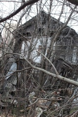 | С этого ракурса вообще непонятно, как этот дом держится и как в нём можно жить. |
| Фото Антона Евсеева. | |
| 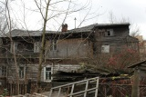 | А отсюда - вполне приличный вид. Можно выделить четыре части - каждая в своём архитектурном стиле. |
| Фото Антона Евсеева. | |
| 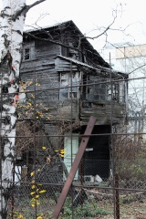 | С западной стороны балкон сохранился, хотя не понятно, за счёт какой антигравитации он держится. Есть и отдельный вход - белая дверь. |
| Фото Антона Евсеева. | |
| 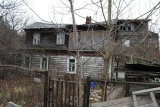 | Калитка, огород, дорожка к дому, инструменты - по всем признакам дом обитаемый. |
| Фото Антона Евсеева. | |
|
| Деревья тоже стоят на защите дома. |
| Фото Антона Евсеева. | |
| 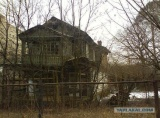 | Фото 2000-х. Балкон со стороны леса ещё держится, подпираемый сложной системой досок, брёвен и столбов. |
| 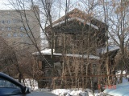 | Фото 2012 года. Систему подпорок даже чем-то обшили, видны дверь с крыльцом и окно. Найдено в ЖЖ, там же и рассказ о хозяине дома. |
| Фото с moscow-moskva.livejournal.com | |
| 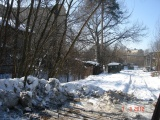 | Проезд между домом и территорией гаражей. Уазик-буханка, увязший в снегу, до сих пор находится на этом же месте. |
| Фото с moscow-moskva.livejournal.com | |
| 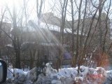 | Весна 2012 года. |
| Фото с moscow-moskva.livejournal.com | |
| 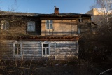 | Весна 2015 года. Из коллекции Кирилла Лебедева, который нашёл и сфотографировал все деревянные дома Москвы. |
| Фото с lumbermoscow.livejournal.com | |
| 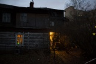 | В доме горит свет. Специально для этого кадра Кирилл Лебедев ходил к дому в сумерках. |
| Фото Кирилла Лебедева. | |
| 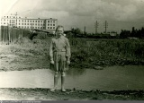 | Край Ипатовского пруда, деревни Ипатовки и строящийся корпус ЦИТО на улице Приорова. |
| Фото А.И. Машкова 1960 года. С сайта pastvu.com | |
| 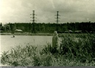 | Та же девочка (дочка А.И. Машкова) на другом краю Ипатовского пруда. За линией электропередач видны крыши домов, один из которых и есть сохранившийся до наших дней. |
| Фото А.И. Машкова 1960 года. | |
| 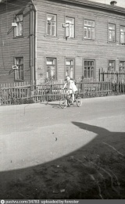 | Та же девочка пятью годами раньше - в 1955 году. На фоне барака, вместо которого сейчас стоит двенадцатиэтажный одноподъездный дом 33 по улице Космонавта Волкова. |
| Фото А.И. Машкова. | |
| 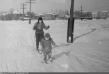 | По Ипатовке на лыжах. |
| Фото Г.А. Дудченко 1964-65 года. | |
| 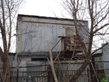 | Путь к дому. Самодельный балкон автосервиса. |
| Фото А. Курбатова. | |
| 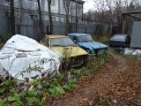 | Разноцветный отечественный автопром. |
| Фото А. Курбатова. | |
| 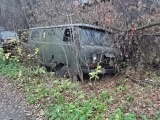 | Тот самый Уазик-буханка. Порос по периметру деревьями. |
| Фото А. Курбатова. | |
| 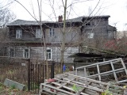 | |
| Фото А. Курбатова. | |
| 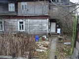 | |
| Фото А. Курбатова. | |
| 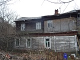 | |
| Фото А. Курбатова. | |
| 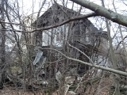 | |
| Фото А. Курбатова. |
Главная страница сайта
Последнее изменение страницы 31 Dec 2019
{kind=link}
{kind=link}
{kind=link}
{kind=link}
{kind=link}
{kind=link}
{kind=link}
{kind=link}
{kind=link}
{kind=link}